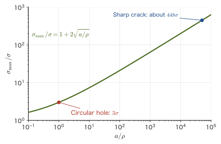
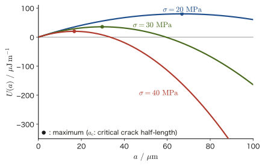
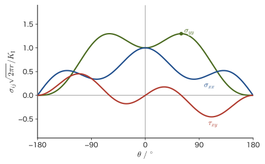

Chapter 21Fundamentals of Fracture Mechanics — Stress Concentration, Griffith Theory, and Fracture Toughness
In the previous chapter, we reconsidered the stress inside a body as a three-dimensional tensor and examined the stress distributions produced by the bending of beams and the torsion of shafts. There, the body was treated as an “ideal continuum without flaws.” Real materials, however, always contain tiny pores and inclusions formed during manufacturing, grinding scratches, defects at grain boundaries, and so on. These defects concentrate stress at the tips of holes and cracks, so that even a stress that ought to be perfectly safe for the body as a whole can break the material in the vicinity of the defect alone. The fracture mechanics that we study in this chapter is the theory that deals quantitatively with questions such as “how much stress can a body containing a crack withstand?” and “how large can a crack grow before it becomes dangerous?”
Fracture mechanics is indispensable, in particular, for understanding the strength of ceramics (pottery and porcelain, glass, alumina, silicon nitride, zirconia, and so on). Metals blunt the stress concentration at the tip of a defect by yielding and deforming plastically, but ceramics undergo almost no plastic deformation at room temperature, and the crack tip keeps supporting stress while remaining sharp. As a result, the strength of ceramics scatters widely from sample to sample even for the same composition, and at times gives the impression of “breaking suddenly without warning.” In the design of the structural ceramics treated in the Department of Materials Science and Technology (cutting tools, engine parts, artificial joints, substrates for electronic components, and so on), these ideas of fracture mechanics are used directly in practice.
In this chapter, we start from the question “why do the theoretically estimated strength and the measured strength differ so greatly?” (Section 21.1), and study stress concentration by holes and cracks (Inglis) and Griffith's theory, which decides whether a crack will extend from the exchange of energy alone (Section 21.2). We then introduce the two quantities that are central to fracture mechanics: the stress intensity factor $K_{\mathrm{I}}$, which expresses the stress field at the crack tip by a single number (Section 21.3), and the energy release rate $\mathcal G$ (Section 21.4). After that, we go through how these are actually measured (Section 21.5), how plastic deformation at the crack tip comes into play (Section 21.6), and how the ease of fracture changes from material to material (Section 21.7, toughening mechanisms of ceramics). In the next chapter, Chapter 22, building on the ideas of this chapter, we move on to fatigue fracture under repeated loading and to Weibull statistics, which deals with the scatter of strength.
- The theoretical strength $\sigma_{\mathrm{th}}$ estimated from the bonding forces between atoms, and why the strength of real materials is only about 1/100 of it
- Stress concentration by elliptical holes and cracks (Inglis's formula), and the fact that the stress concentration factor of a circular hole is 3
- Deriving the strength $\sigma_{\mathrm f}=\sqrt{2E\gamma_{\mathrm s}/(\pi a)}$ of a plate containing a crack from Griffith's idea of an energy balance
- The definition of the stress intensity factor $K_{\mathrm I}$, and the fact that the entire stress field near the crack tip is determined by $K_{\mathrm I}$ alone (the distinction among Modes I, II, and III)
- The relation between the energy release rate $\mathcal G$ and $K_{\mathrm I}$, and the fact that the two fracture criteria, the “stress criterion” and the “energy criterion,” are one and the same
- The meaning of the fracture toughness $K_{\mathrm{IC}}$ and how it is measured (SENB and CT specimens, the plane-strain condition, the SEPB and IF methods for ceramics), and typical values for each material
- The size of the plastic zone at the crack tip (Irwin, Dugdale), and a first look at the ideas of small-scale yielding and the J-integral
- The R-curve, the toughening mechanisms of ceramics (transformation toughening, crack deflection, and bridging), and the ductile fracture of metals (nucleation, growth, and coalescence of voids)
Source notes: This chapter supplements material not in the notes. Related notes: Yasuhide Mochizuki, Physics Notes: Mechanics of Materials (handwritten lecture notes, 6 pages in all). The content is matched to the Fracture Mechanics Simulator of the Mochizuki Laboratory (fracture-derivation.html) in its symbols and numerical examples.
Caution: Notation conventions for this chapter — Poisson's ratio is written only as $\nu$
In mechanics of materials, it is customary to write Poisson's ratio as $\nu=\abs{\varepsilon'/\varepsilon}$ and its reciprocal, Poisson's number, as $m=1/\nu$ (Chapter 18). However, the same letter $m$ is also conventionally used for the scatter coefficient of the Weibull statistics introduced in the next chapter, Chapter 22. To avoid this clash of symbols, in this chapter and in Chapter 22 we do not use Poisson's number $m$ and use only Poisson's ratio $\nu$. Also, so that it is not confused with the Gibbs free energy $G$ or the shear modulus $G$ (Chapter 19), the energy release rate is denoted by the script letter $\mathcal G$.
21.1 Theoretical Strength and Inglis's Stress Concentration
21.1.1 Estimating the theoretical strength
Before turning to cracks, let us first estimate “how much stress it takes to break an ideal crystal, with no flaws or cracks, when we pull on it.” Inside a crystal, the atoms exert attractive and repulsive forces on one another and are arranged while keeping a certain equilibrium distance $a_0$ (the spacing of the atomic planes, on the order of an ångström, $1\ \text{Å}=10^{-10}\ \mathrm{m}$). If we apply a tensile stress from outside and pull the atomic planes apart to a distance $a_0+x$, the stress at first increases following Hooke's law, but before long the bonds are stretched to their limit and weaken, and finally they break and the stress returns to 0. We approximate this stress–displacement relation, “increasing linearly at first, passing over a peak, and returning to 0,” by the sine function, the easiest to handle among hump-shaped functions, following Orowan (1949).
Derivation: Theoretical strength $\sigma_{\mathrm{th}}$ (Orowan's approximation)
Let $x$ ($0\le x\le \lambda/2$) be the displacement of the atomic planes, and assume that the stress is
$$ \sigma(x)=\sigma_{\mathrm{th}}\sin\!\left(\frac{2\pi x}{\lambda}\right) $$Here $\sigma_{\mathrm{th}}$ is the maximum value of the stress (the theoretical strength we want to find), and $\lambda/2$ is the displacement at which the stress returns to 0 again (the displacement at which the bond is completely broken). Since there are two unknowns, $\sigma_{\mathrm{th}}$ and $\lambda$, we determine them using two conditions.
Condition 1: For small $x$, the stress agrees with Hooke's law. For $x\ll\lambda$ we have $\sin\theta\approx\theta$ (the approximation for small angles, the first-order approximation of the Taylor expansion, University Mathematics, Chapter 4), so
$$ \sigma(x)\approx\sigma_{\mathrm{th}}\cdot\frac{2\pi x}{\lambda} $$On the other hand, the strain is $\varepsilon=x/a_0$, so Hooke's law (Chapter 19) reads $\sigma=E\varepsilon=Ex/a_0$. Comparing the coefficients of $x$ gives
\begin{equation} \sigma_{\mathrm{th}}\frac{2\pi}{\lambda}=\frac{E}{a_0} \qquad\Longrightarrow\qquad \lambda=\frac{2\pi a_0\sigma_{\mathrm{th}}}{E} \label{eq:21-orowan-cond1} \end{equation}Condition 2: The work of pulling the atomic planes apart equals the energy of the two newly created surfaces. The work done by the stress in pulling a unit area of atomic plane apart from $x=0$ to $x=\lambda/2$ is the integral of $\sigma(x)$ with respect to $x$ (this is the high school physics idea that work is the sum of force times displacement, rewritten as an integral). Since pulling apart creates two surfaces (upper and lower), this equals twice the surface energy $\gamma_{\mathrm s}$ (per unit area, in units of $\mathrm{J/m^2}$):
$$ \int_0^{\lambda/2}\sigma_{\mathrm{th}}\sin\!\left(\frac{2\pi x}{\lambda}\right)\dd x =\sigma_{\mathrm{th}}\left[-\frac{\lambda}{2\pi}\cos\!\left(\frac{2\pi x}{\lambda}\right)\right]_0^{\lambda/2} =\frac{\sigma_{\mathrm{th}}\lambda}{2\pi}\bigl(1-(-1)\bigr) =\frac{\sigma_{\mathrm{th}}\lambda}{\pi} $$(We used $\cos\pi=-1$ and $\cos 0=1$.) Setting this equal to $2\gamma_{\mathrm s}$, we obtain
\begin{equation} \frac{\sigma_{\mathrm{th}}\lambda}{\pi}=2\gamma_{\mathrm s} \qquad\Longrightarrow\qquad \lambda=\frac{2\pi\gamma_{\mathrm s}}{\sigma_{\mathrm{th}}} \label{eq:21-orowan-cond2} \end{equation}Eliminating $\lambda$. Eq. \eqref{eq:21-orowan-cond1} and Eq. \eqref{eq:21-orowan-cond2} are both expressions for $\lambda$, so we set their right-hand sides equal:
$$ \frac{2\pi a_0\sigma_{\mathrm{th}}}{E}=\frac{2\pi\gamma_{\mathrm s}}{\sigma_{\mathrm{th}}} \qquad\Longrightarrow\qquad \sigma_{\mathrm{th}}^2=\frac{E\gamma_{\mathrm s}}{a_0} $$Therefore
\begin{equation} \sigma_{\mathrm{th}}\approx\sqrt{\frac{E\gamma_{\mathrm s}}{a_0}} \label{eq:21-sigma-th} \end{equation}∎
Theoretical strength in numbers
Putting the values corresponding to alumina ($\mathrm{Al_2O_3}$), $E=380\ \mathrm{GPa}$, $\gamma_{\mathrm s}=1.0\ \mathrm{J/m^2}$, and $a_0=0.2\ \mathrm{nm}$, into Eq. \eqref{eq:21-sigma-th} gives
$$ \sigma_{\mathrm{th}}=\sqrt{\frac{380\times10^9\times1.0}{0.2\times10^{-9}}}\ \mathrm{Pa} \approx4.36\times10^{10}\ \mathrm{Pa}=43.6\ \mathrm{GPa}\approx\frac{E}{8.7} $$Checking the units of the right-hand side, $[\mathrm{Pa\cdot J/m^2}/\mathrm{m}]=[\mathrm{Pa\cdot Pa}]=[\mathrm{Pa^2}]$, and taking the square root gives $\mathrm{Pa}$, which agrees with the left-hand side (we used $1\ \mathrm{J/m^2}=1\ \mathrm{N/m}=1\ \mathrm{Pa\cdot m}$). Yet the actual strength of alumina is only about 300–400 MPa according to representative literature values (a guide to the flexural strength from standard references such as Ashby & Jones; the value here is a guide to the flexural strength, and the tensile strength is lower than that, about 200–300 MPa, Table 19.1), which is at most 1/100 of the theoretical strength (representative values of the fracture toughness $K_{\mathrm{IC}}$ of alumina are collected in Table 21.1). For any material, the theoretical strength is known to be roughly 1/5 to 1/15 of the Young's modulus (modulus of longitudinal elasticity) $E$—in terms of order of magnitude,
\begin{equation} \sigma_{\mathrm{th}}\sim\frac{E}{10} \label{eq:21-sigma-th-order} \end{equation}that is, the theoretical strength comes to about this size (the coefficient varies with how the interatomic force is approximated and with the values of $\gamma_{\mathrm s}$ and $a_0$, but the size itself, “the theoretical strength is one order of magnitude below the Young's modulus,” does not change). The reason why the measured strength is much smaller than this is explained by Inglis's stress concentration, which we examine next, and by the Griffith theory of Section 21.2.
Caution: The coefficient of $\sigma_{\mathrm{th}}$ depends on the model
The coefficient 1 in Eq. \eqref{eq:21-sigma-th} (the coefficient in front of $\sqrt{E\gamma_{\mathrm s}/a_0}$) comes from approximating the interatomic force by a sine function. It is known that with a more realistic interatomic potential (such as the Lennard-Jones type), this coefficient can change by a factor of a few. However, whichever approximation is used, the conclusion itself does not change: the theoretical strength is far greater than the actual strength (about $E/10$ in order of magnitude).
21.1.2 Inglis's stress concentration
It was Inglis (1913) who first explained why the actual strength is much smaller than the theoretical strength. Suppose that an infinitely wide plate has an elliptical hole with major axis $2a$ and minor axis $2b$ ($a\ge b$), and that a uniform tensile stress $\sigma$ is applied from far away in the direction perpendicular to the major axis (the vertical direction in the figure below). According to elasticity theory (in this chapter we use only the result; the derivation requires a method of elasticity theory based on complex functions, which is one of the applications of complex numbers studied in University Mathematics, Chapter 21), the stress at the two ends of the major axis (the sharpest points on the edge of the hole) is
\begin{equation} \sigma_{\max}=\sigma\left(1+\frac{2a}{b}\right) \label{eq:21-inglis} \end{equation}Formula 21.1: Inglis's formula
When a uniform tensile stress $\sigma$ perpendicular to the major axis is applied to an infinite plate with an elliptical hole of major axis $2a$ and minor axis $2b$, the maximum stress that arises at the end of the major axis is given by Eq. \eqref{eq:21-inglis}.
For $a=b$ (a circular hole), we get $\sigma_{\max}=3\sigma$. This is the well-known result that “the stress concentration factor of a circular hole is 3.” This value also agrees with the exact solution that Kirsch (1898) obtained directly for the stress field around a circular hole in polar coordinates (a solution older than Inglis's, a special case valid only for circular holes). According to Kirsch's solution, at the edge of a circular hole (radius $a$), the stress at the position at angle $\theta$ measured from the loading direction is $\sigma(1-2\cos2\theta)$; it takes the maximum value $3\sigma$ in the direction perpendicular to the load ($\theta=90°$) and becomes $-\sigma$ (compression) in the direction of the load ($\theta=0°$). How the stress around a circular hole returns to $\sigma$ as we move away from the hole was also computed numerically in Example 18.2 (Saint-Venant's principle) of Chapter 18.
A crack is the limit of an “ellipse with a sharp tip”
Letting $b\to0$ in Eq. \eqref{eq:21-inglis} gives $\sigma_{\max}\to\infty$. This is because an ellipse with $b=0$ becomes “a crack of length $2a$ whose tip has a radius of curvature of 0 (an infinitely sharp crack).” In other words, a crack can be treated as the limit of an elliptical hole with a pointed tip. This will be the starting point when we consider the Griffith theory and the stress field at the crack tip from Section 21.2 onward. On the other hand, Eq. \eqref{eq:21-inglis} also shows that a hole with a round tip ($b$ reasonably large) is less dangerous than a crack of the same length—this is why a round pore does not immediately become the origin of fracture (however, if a small crack is attached to the edge of the pore, the pore and the crack act together with their combined size).
If we rewrite Eq. \eqref{eq:21-inglis} not in terms of the size of the hole itself but in terms of “the ratio of the length to the sharpness of the tip,” the picture becomes clearer. Near the end $(a,0)$ of the major axis of the ellipse $(x/a)^2+(y/b)^2=1$, we approximate the ellipse by a circle with the same curvature (radius of curvature $\rho$), as follows.
Derivation: Radius of curvature $\rho=b^2/a$
Rewrite the equation of the ellipse as $y^2=b^2\left(1-\dfrac{x^2}{a^2}\right)$, let $t=a-x$ (the distance from the tip, in the small range $t\ge0$), and expand in $t$ (the first-order approximation of the Taylor expansion, University Mathematics, Chapter 4). Substituting $x=a-t$ gives
$$ y^2=b^2\left(1-\frac{(a-t)^2}{a^2}\right)=b^2\cdot\frac{a^2-(a-t)^2}{a^2}=b^2\cdot\frac{2at-t^2}{a^2}\approx\frac{2b^2}{a}\,t\qquad(t\ll a) $$On the other hand, if we place a circle of radius $\rho$ so that it is tangent at the tip, then in the same coordinates it can be written as $y^2\approx2\rho t$ (obtained by expanding the circle's equation $x^2+y^2=\rho^2$ near the tip). Comparing the coefficients of $t$ in the two expressions gives
\begin{equation} 2\rho=\frac{2b^2}{a} \qquad\Longrightarrow\qquad \rho=\frac{b^2}{a} \label{eq:21-rho} \end{equation}∎
From Eq. \eqref{eq:21-rho} we have $b=\sqrt{a\rho}$, so $2a/b=2a/\sqrt{a\rho}=2\sqrt{a/\rho}$. Therefore Eq. \eqref{eq:21-inglis} can be rewritten as
\begin{equation} \sigma_{\max}=\sigma\left(1+2\sqrt{\frac{a}{\rho}}\right)\approx2\sigma\sqrt{\frac{a}{\rho}}\qquad(a\gg\rho) \label{eq:21-inglis-rho} \end{equation}Figure 21.2 plots this equation on logarithmic scales. It shows clearly that what determines the degree of concentration is not the length $a$ of the hole or crack by itself, but “the ratio of the length $a$ to the sharpness $\rho$ of the tip.”

Application: What if the crack is as sharp as a single atom?
Suppose the tip of a crack of length $a=10\ \mu\mathrm{m}$ is as sharp as a single atom ($\rho=a_0=0.2\ \mathrm{nm}$). Then $a/\rho=5\times10^4$, and by Eq. \eqref{eq:21-inglis-rho} the concentration factor is $1+2\sqrt{5\times10^4}\approx448$. If we merely apply $\sigma=100\ \mathrm{MPa}$ from outside, the stress at the tip becomes $448\times100\ \mathrm{MPa}\approx44.8\ \mathrm{GPa}$, which exceeds the theoretical strength of alumina, $43.6\ \mathrm{GPa}$, found in Section 21.1.1. In other words, even a single sharp crack can produce at its tip a stress comparable to the theoretical strength. However, since elasticity theory is a theory of a continuum, it does not accurately describe the stress at a tip as sharp as a single atom, and the actual $\rho$ cannot be measured directly. Griffith (1921) therefore devised a way to determine the condition for fracture without asking for the value of the tip stress itself, using only the exchange of energy when the crack grows. This is the subject of the next section, Section 21.2.
Example 21.1: Why is the stress concentration factor of a circular hole 3?
An infinitely wide plate has a circular hole of radius $a$, and a uniform tensile stress $\sigma$ is applied from far away. Using Inglis's formula, Eq. \eqref{eq:21-inglis}, find the maximum stress at the edge of the hole and derive the well-known “stress concentration factor of 3.” Also explain how this result corresponds to Kirsch's exact solution.
Solution. A circular hole is the special case of an ellipse in which the major and minor axes are equal ($a=b$). Substituting this into Eq. \eqref{eq:21-inglis} gives
$$ \sigma_{\max}=\sigma\left(1+\frac{2a}{a}\right)=\sigma(1+2)=3\sigma $$Therefore the maximum stress at the edge of the hole is three times the stress far away. This is the result that “the stress concentration factor of a circular hole is 3.” This value also agrees with the fact that, in the exact solution Kirsch obtained directly for a circular hole, the stress in the direction perpendicular to the load ($\theta=90°$) is $\sigma(1-2\cos180°)=\sigma(1+2)=3\sigma$ (Inglis's solution for the ellipse is a more general result that contains the circular hole as a special case). Note also that for the same circular hole, at the edge in the direction of the load ($\theta=0°$), we get $\sigma(1-2\cos0°)=-\sigma$, which can be confirmed to be compression.
(Corresponds to: fracture-derivation.html §3, “Stress Concentration (Inglis)”)
21.2 Griffith's Energy Balance
Griffith's idea (1921) was not to ask what happens at the tip of the crack, but to look only at the energy balance when the crack grows by a small amount. When a crack grows, (i) the material around the crack relaxes and elastic strain energy is released, while (ii) energy is required because two new surfaces are created. If (i) exceeds (ii), the crack grows spontaneously, with no action from outside. In this section we consider an infinitely wide plate of thickness 1 (unit thickness) containing a through-thickness crack of total length $2a$, with a uniform tensile stress $\sigma$ applied far away in the direction perpendicular to the crack (plane stress).
Caution: $a$ is the “half-length of the crack”
For a crack that penetrates the plate, the total length is $2a$, and $a$ is half of it (the half-length). For a crack that enters from the surface (an edge crack), $a$ is the depth of the crack itself. The definition of $a$ (total length or half-length) may differ from one reference to another, so be sure to check it when comparing numerical values.
21.2.1 Elastic energy released when a crack is introduced
According to the theory of elasticity (as we saw in Section 21.1, a crack is the limit $b\to0$ of Inglis's elliptical hole, so we use that solution), this crack opens into a thin ellipse. Taking the center of the crack as the origin and the $x$-axis along the crack, the displacement of the upper crack face is
$$ v(x)=\frac{2\sigma}{E}\sqrt{a^2-x^2}\qquad(-a\le x\le a) $$(the lower face moves by $-v(x)$; we borrow this result from the theory of elasticity). Using this shape of the opening, let us find the elastic energy released by introducing the crack.
Derivation: Released elastic energy $U_E=\pi\sigma^2a^2/E$
We reason as follows. Start from a plate without a crack under the stress $\sigma$, and imagine cutting along the plane where the crack is to be introduced, but leave on the cut faces the stress $\sigma$ that was originally acting there, as a “holding force.” As long as this holding force is applied, the plate is no different from the state without a crack. When this holding force is slowly reduced from $\sigma$ to 0, the crack faces open from 0 to $v(x)$. The work that the material does against the holding force during this process is the elastic energy released by introducing the crack.
In a linear elastic body, the holding force and the amount of opening change in proportion to each other, so the work can be computed as “initial force $\times$ final displacement $\times\ 1/2$” (the area of the triangle under the line when the force–displacement graph is a straight line through the origin). Summing over the two faces, upper and lower, we obtain
$$ U_E=2\times\int_{-a}^{a}\frac{1}{2}\sigma\,v(x)\,\dd x =\sigma\int_{-a}^{a}\frac{2\sigma}{E}\sqrt{a^2-x^2}\,\dd x =\frac{2\sigma^2}{E}\int_{-a}^{a}\sqrt{a^2-x^2}\,\dd x $$The last integral $\displaystyle\int_{-a}^{a}\sqrt{a^2-x^2}\,\dd x$ is none other than the area under $y=\sqrt{a^2-x^2}$ (the upper semicircle of radius $a$), that is, the area of a semicircle, $\pi a^2/2$ (see the relation between definite integrals and areas in University Mathematics, Chapter 5, or simply use the formula for the area of a circle). Therefore
\begin{equation} U_E=\frac{2\sigma^2}{E}\cdot\frac{\pi a^2}{2}=\frac{\pi\sigma^2a^2}{E} \label{eq:21-UE} \end{equation}∎
Intuition: Holding the external force constant or fixing the grips
If the external force is held constant (constant load), the external force does additional work as the crack opens, so the strain energy stored in the material itself actually increases. If the grips are fixed (constant displacement), the strain energy itself decreases. They look opposite, but it can be shown that, for a linear elastic body, the amount by which “the potential energy of the whole system, namely the strain energy minus the work done by the external force” decreases is the same in both cases. Read the $U_E$ in Eq. \eqref{eq:21-UE} as this “amount released by the system as a whole.”
21.2.2 Energy of the newly created surfaces
The crack has length $2a$ and thickness 1, and there are two new faces (upper and lower), so the required surface energy is
\begin{equation} U_S=2\times(2a\times1)\times\gamma_{\mathrm s}=4a\gamma_{\mathrm s} \label{eq:21-US} \end{equation}Here $\gamma_{\mathrm s}$ is the surface energy per unit area (the quantity introduced in Section 21.1, which also appeared in the formula for the theoretical strength).
21.2.3 Finding the maximum of the total energy
Taking the state without a crack as the reference, the change in the energy of the whole system when a crack of length $2a$ is introduced is obtained by subtracting the released energy of Eq. \eqref{eq:21-UE} and adding the surface energy of Eq. \eqref{eq:21-US}:
\begin{equation} U(a)=-\frac{\pi\sigma^2a^2}{E}+4\gamma_{\mathrm s}a \label{eq:21-Ua} \end{equation}The first term decreases in proportion to $a^2$, and the second term increases in proportion to $a$. While $a$ is small, the second term (surface energy) wins, but when $a$ becomes large, the first term (release of elastic energy) wins. Therefore $U(a)$ has a hill shape, as in Figure 21.3. Whether the crack grows is determined by the sign of the slope of this energy, $\dd U/\dd a$:
Intuition: A ball crossing a hill
As long as $\dd U/\dd a\gt0$, the energy increases when the crack grows, so the crack does not grow (unless energy is supplied from outside). This is the same as a ball trying to go up a slope, which does not roll up by itself. But once $\dd U/\dd a\lt0$, the energy decreases the more the crack grows, so the crack keeps growing and can no longer be stopped—the same situation as a ball that has crossed the hill and rolls down the slope. The boundary point $\dd U/\dd a=0$ corresponds to the top of the hill (unstable equilibrium).
Differentiating Eq. \eqref{eq:21-Ua} with respect to $a$ gives
$$ \frac{\dd U}{\dd a}=-\frac{2\pi\sigma^2a}{E}+4\gamma_{\mathrm s} $$Solving the boundary condition $\dd U/\dd a=0$, we obtain
$$ \frac{2\pi\sigma^2a}{E}=4\gamma_{\mathrm s} \qquad\Longrightarrow\qquad \sigma^2=\frac{2E\gamma_{\mathrm s}}{\pi a} $$If we read this as “the stress (strength) at which a crack of given half-length $a$ causes fracture,” we obtain Griffith's criterion:
Formula 21.2: Griffith's criterion (plane stress)
For a through-thickness crack of half-length $a$ in an infinitely wide plate, the stress (strength) at which the crack begins to grow unstably is
\begin{equation} \sigma_{\mathrm f}=\sqrt{\frac{2E\gamma_{\mathrm s}}{\pi a}} \label{eq:21-griffith} \end{equation}Conversely, the upper limit of the half-length of a crack that can remain stable under a given stress $\sigma$ (the critical crack length) is $a_{\mathrm c}=2E\gamma_{\mathrm s}/(\pi\sigma^2)$.
The second derivative of $U(a)$ is $\dd^2U/\dd a^2=-2\pi\sigma^2/E\lt0$, so this point is indeed a maximum (the top of the hill). For $a\lt a_{\mathrm c}$ the crack does not grow, and at $a=a_{\mathrm c}$ it begins to grow unstably—this is why ceramics fracture suddenly, without warning.
Correction for plane strain
Eq. \eqref{eq:21-griffith} assumes a thin plate that can deform freely in the thickness direction (plane stress, with the stress in the thickness direction $\sigma_{zz}=0$). When the deformation in the thickness direction is constrained by the surrounding material, as in the interior of a thick plate (plane strain, $\varepsilon_{zz}=0$), redoing the same calculation in the theory of elasticity shows that $E/(1-\nu^2)$ appears in place of $E$. Hence Griffith's criterion for plane strain is
$$ \sigma_{\mathrm f}=\sqrt{\frac{2\gamma_{\mathrm s}}{\pi a}\cdot\frac{E}{1-\nu^2}} $$(where $\nu$ is Poisson's ratio; see Chapter 18). For a material with $\nu\approx0.2$–$0.3$, $1/(1-\nu^2)$ is about 1.04–1.10, so the correction is only a few percent. In this chapter, from Section 21.4 onward, instead of writing “$E$,” we use the symbol $E'$, which means $E$ for plane stress and $E/(1-\nu^2)$ for plane strain (an abbreviation used only in this chapter, and unrelated to the bulk modulus $K$ (Chapter 19)).

Application: Griffith's experiments on glass fibers
Griffith confirmed by actual measurement that thinner glass fibers have higher strength. Thick rods tend to contain large flaws such as grinding scratches and pores, whereas thin fibers (especially ones freshly drawn in a flame) leave little room for large flaws, so in Eq. \eqref{eq:21-griffith} the smaller $a$ gives a higher strength $\sigma_{\mathrm f}$. The same “smallness of flaws” is part of the reason why modern optical fibers and the reinforcing fibers of glass-fiber-reinforced plastics (GFRP) have high strength.
Example 21.2: Strength of scratched window glass
A scratch of length $100\ \mu\mathrm{m}$ (assumed to be a through-thickness crack, with half-length $a=50\ \mu\mathrm{m}$) has been made on the surface of a window pane made of soda-lime glass ($E=70\ \mathrm{GPa}$). Taking the surface energy of the glass to be $\gamma_{\mathrm s}=0.6\ \mathrm{J/m^2}$, find, using Griffith's criterion, at what tensile stress the glass breaks with this scratch.
Solution. Substitute $E=70\times10^9\ \mathrm{Pa}$, $\gamma_{\mathrm s}=0.6\ \mathrm{J/m^2}$, and $a=50\times10^{-6}\ \mathrm{m}$ into Eq. \eqref{eq:21-griffith}:
$$ \sigma_{\mathrm f}=\sqrt{\frac{2\times70\times10^9\times0.6}{\pi\times50\times10^{-6}}}\ \mathrm{Pa} =\sqrt{5.35\times10^{14}}\ \mathrm{Pa} \approx2.3\times10^{7}\ \mathrm{Pa}=23\ \mathrm{MPa} $$Checking the units: the numerator is $[\mathrm{Pa\cdot J/m^2}]=[\mathrm{Pa\cdot Pa\cdot m}]$; dividing this by $[\mathrm m]$ (the denominator) gives $[\mathrm{Pa^2}]$, and taking the square root gives $[\mathrm{Pa}]$, which is correct. Whereas the strength of glass without flaws can reach several hundred MPa, a single scratch of about $100\ \mu\mathrm{m}$, barely visible to the eye, reduces the strength greatly, to the order of tens of MPa. This calculation shows why window glass, which is unaffected by being pressed with a finger, can sometimes break at a surprisingly low stress from the scratch of a small flying stone.
(Corresponds to: fracture-derivation.html §2, “Estimating the Theoretical Strength”, §4, “Griffith's Energy Balance”)
21.3 The Stress Intensity Factor and the Stress Field at the Crack Tip
Griffith looked at the flow of energy into and out of the system as a whole. In contrast, Irwin (1957) shifted the viewpoint to the tip of the crack and devised a way to express the “strength” of the stress field near the tip by a single number. To state the conclusion first, Griffith's energy viewpoint and Irwin's stress-field viewpoint are two ways of looking at the same fracture criterion, and we will confirm the correspondence in Section 21.4.
21.3.1 The stress field at the crack tip
In a linear elastic body, where the distance $r$ from the crack tip is sufficiently smaller than $a$, the tensile stress on the extension of the crack plane takes the following form, as is shown by analyses of Westergaard (1939) and others using complex stress functions (in this chapter we use only the result):
\begin{equation} \sigma_{yy}(r)\approx\frac{K_{\mathrm I}}{\sqrt{2\pi r}}\qquad(r\ll a,\ \theta=0) \label{eq:21-Kfield-axis} \end{equation}As $r\to0$ the stress diverges like $1/\sqrt r$, but the form of the divergence itself is always the same, regardless of the length of the crack or the shape of the specimen; all the differences, such as the crack length, the geometry, and the remote stress, are packed into the proportionality coefficient $K_{\mathrm I}$. We call this $K_{\mathrm I}$ the stress intensity factor. The index I stands for “Mode I” (deformation in which the crack opens), which we will see later.
Definition 21.1: Stress intensity factor $K_{\mathrm I}$
When a wide plate (one large enough compared with the crack length) is subjected to a uniform remote stress $\sigma$, the Mode I stress intensity factor is defined as
\begin{equation} K_{\mathrm I}=Y\sigma\sqrt{\pi a} \label{eq:21-KI} \end{equation}Here $Y$ is the geometry factor (dimensionless). For a central crack through the thickness of the plate (the configuration treated in Section 21.2), $Y=1.0$; for an edge crack that starts from the edge (free surface) of the plate and has a straight crack front, $Y\approx1.12$, because there is no constraint on one side and the crack opens more easily. Since $\sigma$ is in $\mathrm{Pa}$ and $\sqrt{\pi a}$ is in $\sqrt{\mathrm m}$, the unit of $K_{\mathrm I}$ is $\mathrm{Pa\cdot m^{1/2}}$ (in practice $\mathrm{MPa\cdot m^{1/2}}$, which is read “megapascal root meter”).
Caution: Do not confuse the stress intensity factor $K_{\mathrm I}$ with the stress concentration factor of Section 21.1
The “stress concentration factor” seen in Section 21.1 ($\sigma_{\max}/\sigma$, equal to 3 for a circular hole) is a dimensionless ratio that told us how many times larger the stress is at a single point, the tip of a hole or a crack. In contrast, the stress intensity factor $K_{\mathrm I}$ is a quantity with units ($\mathrm{Pa\cdot m^{1/2}}$) and expresses the strength of the whole stress field, which varies with the distance $r$ from the tip. As we approach the tip ($r\to0$), the stress itself always diverges to infinity, so fracture cannot be discussed in terms of “the value of the stress at the tip.” The idea of the stress intensity factor is therefore to exploit the fact that the divergence always has the same form ($1/\sqrt r$) and to express the strength of the field by the coefficient $K_{\mathrm I}$ in front of it. Also, take care not to confuse $K_{\mathrm I}$ with the bulk modulus $K$, which carries no index (Chapter 19). In this chapter we do not use $K$ without an index.
Eq. \eqref{eq:21-Kfield-axis} holds only on the extension of the crack ($\theta=0$), but in reality the stress spreads over the whole neighborhood of the tip. Expressed in polar coordinates $(r,\theta)$ with the tip as the origin ($\theta$ is the angle measured from the extension of the crack), the Mode I stress field takes the following form, as is shown by an analysis using Westergaard's complex stress function (Irwin, 1957):
Theorem 21.1: The crack-tip stress field for Mode I (the K field)
In the region near the crack tip ($r\ll a$), the Mode I stress components are
\begin{align} \sigma_{xx}&=\frac{K_{\mathrm I}}{\sqrt{2\pi r}}\cos\frac\theta2\left[1-\sin\frac\theta2\sin\frac{3\theta}2\right] \label{eq:21-Kfield-xx}\\ \sigma_{yy}&=\frac{K_{\mathrm I}}{\sqrt{2\pi r}}\cos\frac\theta2\left[1+\sin\frac\theta2\sin\frac{3\theta}2\right] \label{eq:21-Kfield-yy}\\ \tau_{xy}&=\frac{K_{\mathrm I}}{\sqrt{2\pi r}}\cos\frac\theta2\sin\frac\theta2\cos\frac{3\theta}2 \label{eq:21-Kfield-xy} \end{align}Here the $x$ axis lies along the extension of the crack and the $y$ axis points in the direction in which the crack opens. If we set $\theta=0$, Eq. \eqref{eq:21-Kfield-yy} coincides with Eq. \eqref{eq:21-Kfield-axis}.
The angle-dependent parts of Eq. \eqref{eq:21-Kfield-yy} and the others (such as $\cos(\theta/2)[1\pm\sin(\theta/2)\sin(3\theta/2)]$) are universal functions that depend on neither $a$ nor $\sigma$. All the differences, such as the crack length and shape and the remote stress, are contained in the single number $K_{\mathrm I}$—this is what is meant by saying that “$K_{\mathrm I}$ expresses the strength of the field at the tip by a single number.” Figure 21.4 plots this angle-dependent part from $\theta=-180°$ to $180°$.

Why is it not a problem that the stress at the tip is infinite?
Eqs. \eqref{eq:21-Kfield-xx}–\eqref{eq:21-Kfield-xy} are the answers given by the elasticity theory of a continuum, and they diverge to infinity as $r\to0$. At a real crack tip, the stress remains finite because of a roundness on the order of the size of an atom and a small region of plastic deformation and nonlinearity (the process zone). $K_{\mathrm I}$ is a quantity expressing the strength of the elastic field that lies outside that small region and surrounds it, and the rationale for discussing fracture in terms of $K_{\mathrm I}$ is that “if the field on the outside is the same, what happens on the inside (at the tip) should also be the same.” What actually happens inside the tip will be taken up again in Section 21.6.
21.3.2 Modes I, II, and III — the three modes of deformation of a crack
What we have treated so far is only the deformation that opens the crack perpendicularly (Mode I, the opening mode), but there are two other modes of deformation of a crack. All of them are distinguished by the direction in which the displacement occurs relative to the crack faces.
- Mode I (opening mode): Under a tensile stress perpendicular to the crack faces, the crack deforms by opening its mouth. This is the mode we have treated so far in this chapter, and it is the most fundamental and the most dangerous mode.
- Mode II (in-plane shear mode): Shear deformation in which the crack faces slide within the crack plane, parallel to the direction in which the crack advances.
- Mode III (out-of-plane shear mode, also called the anti-plane shear mode): Shear deformation in which the crack faces slide in the out-of-plane direction, parallel to the front of the crack. It appears, for example, in the torsional fracture of a round bar.
Most actual fractures are dominated by Mode I (as in Section 21.1, a crack in a brittle material tends to advance in the direction perpendicular to the maximum principal stress, so even when an oblique load is applied, the crack naturally turns toward the direction in which Mode I predominates). Under a general load the three modes overlap, but in this chapter we focus on Mode I. For Modes II and III as well, the stress intensity factors $K_{\mathrm{II}}$ and $K_{\mathrm{III}}$ are defined in the same way.
Irwin–Orowan modification — plastic work in metals
Griffith's theory in Section 21.2 assumed that all that is needed for a crack to extend is the energy $\gamma_{\mathrm s}$ for creating new surface (the surface energy, the value for an ideal brittle body). In metals, however, plastic deformation occurs very close to the crack tip, and the plastic work consumed there becomes much larger than the surface energy. Taking this into account, Irwin (1948) and Orowan (1949) modified Griffith's criterion so as to use, in place of $\gamma_{\mathrm s}$, the effective surface energy $\gamma_{\mathrm{eff}}$ ($\gamma_{\mathrm{eff}}\gg\gamma_{\mathrm s}$), which also includes the plastic work. As we will see in Sections 21.4 and 21.5, the fact that the fracture toughness of metals is far greater than that of ceramics is mainly due to this difference in plastic work. Moreover, the fact that the region near the tip is opened up and rounded by plastic deformation (the effective radius of curvature $\rho$ of the tip becomes substantially larger, from the atomic scale to about the size of the plastic zone) also relaxes the elastic stress concentration itself, according to Inglis's relation in Eq. \eqref{eq:21-inglis-rho} of Section 21.1—that is, the argument of Section 21.1 that a sharper crack is more dangerous is tempered by plastic deformation.
Example 21.3: Computing the stress field at the crack tip
At the tip of a surface crack in a certain component, the stress intensity factor was $K_{\mathrm I}=20\ \mathrm{MPa\,m^{1/2}}$. Find $\sigma_{xx}$, $\sigma_{yy}$, and $\tau_{xy}$ at the point at a distance $r=1\ \mathrm{mm}$ from the tip and at the angle $\theta=45°$.
Solution. First we compute the coefficient $K_{\mathrm I}/\sqrt{2\pi r}$. With $r=1\times10^{-3}\ \mathrm m$,
$$ \frac{K_{\mathrm I}}{\sqrt{2\pi r}}=\frac{20\times10^6}{\sqrt{2\pi\times10^{-3}}}\ \mathrm{Pa}=\frac{20\times10^6}{0.0792}\ \mathrm{Pa}\approx2.52\times10^{8}\ \mathrm{Pa}=252\ \mathrm{MPa} $$Next we use the values of the trigonometric functions at $\theta=45°$ ($\theta/2=22.5°$, $3\theta/2=67.5°$): $\cos22.5°=0.924$, $\sin22.5°=0.383$, $\sin67.5°=0.924$, $\cos67.5°=0.383$. Substituting these into Eqs. \eqref{eq:21-Kfield-xx}–\eqref{eq:21-Kfield-xy}:
$$ \sigma_{yy}=252\ \mathrm{MPa}\times0.924\times[1+0.383\times0.924]=252\times0.924\times1.354\approx315\ \mathrm{MPa} $$ $$ \sigma_{xx}=252\ \mathrm{MPa}\times0.924\times[1-0.383\times0.924]=252\times0.924\times0.646\approx151\ \mathrm{MPa} $$ $$ \tau_{xy}=252\ \mathrm{MPa}\times0.924\times0.383\times0.383\approx34\ \mathrm{MPa} $$Compare these with the values at $\theta=0$ (directly ahead of the crack), $\sigma_{xx}=\sigma_{yy}=252\ \mathrm{MPa}$ and $\tau_{xy}=0$. At $\theta=45°$, $\sigma_{yy}$ (the component that opens the crack) is somewhat larger, $\sigma_{xx}$ (the component parallel to the crack) is smaller, and the shear stress $\tau_{xy}$ is no longer zero. Thus the magnitudes and directions of the stresses around the tip vary with the angle, but the coefficient of all of them is determined by $K_{\mathrm I}$ alone.
21.4 The Energy Release Rate $\mathcal G$ and the Two Fracture Criteria
21.4.1 The energy release rate $\mathcal G$
In Section 21.2 we found the total elastic energy $U_E=\pi\sigma^2a^2/E$ (Eq. \eqref{eq:21-UE}) released when the half-length of the crack increases by $a$. The quantity obtained by rewriting this as the energy released per unit area of crack advance is called the energy release rate $\mathcal G$ (a script $G$; fracture mechanics uses this letter to distinguish it from the Gibbs free energy $G$ and the shear modulus $G$ of Chapter 19).
Definition 21.2: Energy release rate $\mathcal G$
The elastic energy released when the area of a crack increases by a unit amount is defined as the energy release rate $\mathcal G$ (unit $\mathrm{J/m^2}$). A crack of total length $2a$ (half-length $a$) has two tips; when $a$ increases by $\dd a$, each end advances by $\dd a$, so the area of the crack (thickness 1) increases by $2\,\dd a$. Therefore
$$ \mathcal G=\frac{\dd U_E}{\dd(2a)} $$Using Eq. \eqref{eq:21-UE} to compute this, we obtain
\begin{equation} \mathcal G=\frac12\frac{\dd}{\dd a}\left(\frac{\pi\sigma^2a^2}{E}\right) =\frac12\cdot\frac{2\pi\sigma^2a}{E} =\frac{\pi\sigma^2a}{E} \label{eq:21-G-planestress} \end{equation}This is the result for plane stress (for plane strain, following “Correction for plane strain” in Section 21.2, replace $E\to E/(1-\nu^2)$). On the other hand, setting $Y=1$ in Eq. \eqref{eq:21-KI} of Section 21.3 gives $K_{\mathrm I}^2=\pi\sigma^2a$, so Eq. \eqref{eq:21-G-planestress} can be written directly as
\begin{equation} \mathcal G=\frac{K_{\mathrm I}^2}{E'} \qquad\left(E'=\begin{cases}E&\text{(plane stress)}\\[2pt] E/(1-\nu^2)&\text{(plane strain)}\end{cases}\right) \label{eq:21-G-K} \end{equation}Theorem 21.2: Relation between $\mathcal G$ and $K_{\mathrm I}$
The energy release rate $\mathcal G$ at the crack tip (Griffith's viewpoint) and the stress intensity factor $K_{\mathrm I}$ (Irwin's viewpoint) are linked by a single equation, Eq. \eqref{eq:21-G-K}. That is, the viewpoint that looks at the energy flowing into and out of the system as a whole and the viewpoint that looks at the strength of the stress field at the tip say mathematically the same thing.
The reason we introduced the notation $E'$ here is, as also noted in “Correction for plane strain” in Section 21.2, to avoid having to write out each time whether $E$ or $E/(1-\nu^2)$ is to be used for plane stress and plane strain. From here on in this chapter, $E'$ is used in this sense unless otherwise stated.
21.4.2 The two fracture criteria are the same
The surface-energy side is counted in the same way. When the area of the crack increases by a unit amount, the surface increases by two sheets' worth, upper and lower, so the energy required is $2\gamma_{\mathrm s}$. The condition “the body fails when $\mathcal G$ reaches $2\gamma_{\mathrm s}$” (Griffith's energy criterion) is
$$ \frac{\pi\sigma^2a}{E}=2\gamma_{\mathrm s} \quad\Longleftrightarrow\quad \sigma=\sqrt{\frac{2E\gamma_{\mathrm s}}{\pi a}} $$which coincides exactly with Eq. \eqref{eq:21-griffith}. Restated in terms of the stress intensity factor, this becomes “the body fails when $K_{\mathrm I}$ reaches a critical value characteristic of the material (called $K_{\mathrm{IC}}$ in Section 21.5)” (Irwin's stress criterion). If in Eq. \eqref{eq:21-G-K} we replace $\mathcal G$ by its critical value $\mathcal G_{\mathrm c}$ and $K_{\mathrm I}$ by its critical value $K_{\mathrm{IC}}$, the relation between the two can be summarized as follows:
Theorem 21.3: Equivalence of the two fracture criteria
The condition for a crack to begin growing unstably can be written in the following two ways, which are equivalent to each other.
\begin{align} \textbf{Stress criterion:}&\quad K_{\mathrm I}=Y\sigma\sqrt{\pi a}\ \ge\ K_{\mathrm{IC}} \notag\\ \textbf{Energy criterion:}&\quad \mathcal G=\frac{K_{\mathrm I}^2}{E'}\ \ge\ \mathcal G_{\mathrm c}=\frac{K_{\mathrm{IC}}^2}{E'} \notag \end{align}$\mathcal G_{\mathrm c}$ is called the fracture energy (the resistance to crack growth). For an ideal brittle material (one that undergoes no plastic deformation at all), taking into account the Irwin–Orowan modification of Sections 21.2 and 21.3, we can write $\mathcal G_{\mathrm c}=2\gamma_{\mathrm{eff}}$ ($\gamma_{\mathrm{eff}}$: the effective surface energy, including plastic work). Back-calculating $\gamma_{\mathrm{eff}}=\mathcal G_{\mathrm c}/2=K_{\mathrm{IC}}^2/(2E')$ from the measured $K_{\mathrm{IC}}$ gives a rough indication of how much plastic work is contributing (we will see a numerical example in Section 21.7).
21.4.3 Allowable crack size
Solving the stress criterion of Theorem 21.3 for $a$ gives the upper limit of the crack size that is safely allowable under a given design stress $\sigma$:
\begin{equation} a_{\mathrm c}=\frac1\pi\left(\frac{K_{\mathrm{IC}}}{Y\sigma}\right)^2 \label{eq:21-ac} \end{equation}This is the most basic equation for applying fracture mechanics to the design of structures. It allows us to judge that a crack smaller than $a_{\mathrm c}$ is safe, while a crack exceeding it is dangerous.
Example 21.4: Critical crack length in a steel plate and the effect of plane strain
A plate made of structural steel ($K_{\mathrm{IC}}=50\ \mathrm{MPa\,m^{1/2}}$, $E=210\ \mathrm{GPa}$, $\nu=0.30$) is subjected to a design stress $\sigma=200\ \mathrm{MPa}$. (1) Find the allowable crack depth $a_{\mathrm c}$ for a surface crack ($Y=1.12$). (2) For a crack of half-length $5\ \mathrm{mm}$ in this plate, calculate the energy release rate $\mathcal G$ in plane stress and in plane strain, and compare them.
Solution (1). Substituting the numerical values into Eq. \eqref{eq:21-ac}:
$$ a_{\mathrm c}=\frac1\pi\left(\frac{50\times10^6}{1.12\times200\times10^6}\right)^2\,\mathrm m =\frac1\pi\times(0.2232)^2\ \mathrm m \approx1.59\times10^{-2}\ \mathrm m=15.9\ \mathrm{mm} $$That is, if there is a surface crack deeper than about 16 mm, unstable fracture can occur under this design stress. However, we must check the plane-strain size condition that we will see in Section 21.5 (in this example we check it later, in Example 21.6).
Solution (2). For plane stress we use Eq. \eqref{eq:21-G-planestress} as it stands:
$$ \mathcal G_{\text{plane stress}}=\frac{\pi\sigma^2a}{E}=\frac{\pi\times(200\times10^6)^2\times5\times10^{-3}}{210\times10^9}\ \mathrm{J/m^2}\approx2990\ \mathrm{J/m^2} $$For plane strain, $E\to E/(1-\nu^2)$; that is, $\mathcal G$ is multiplied by $(1-\nu^2)$:
$$ \mathcal G_{\text{plane strain}}=(1-\nu^2)\,\mathcal G_{\text{plane stress}}=(1-0.30^2)\times2990\ \mathrm{J/m^2}=0.91\times2990\ \mathrm{J/m^2}\approx2720\ \mathrm{J/m^2} $$For the same $\sigma,a$, plane strain gives a $\mathcal G$ that is about 9% smaller. This is because in plane strain the deformation in the thickness direction is constrained, so the crack opens less easily and slightly less elastic energy is released. For ordinary materials with $\nu\approx0.2$–$0.3$, this difference is only several percent.
(Corresponds to: fracture-derivation.html §5, “Stress Intensity Factor and Energy Release Rate”)
21.5 Fracture Toughness $K_{\mathrm{IC}}$ and Its Measurement
21.5.1 Definition of the fracture toughness $K_{\mathrm{IC}}$
As we saw in Section 21.4, the condition for a crack to begin growing unstably is that the stress intensity factor $K_{\mathrm I}$ reach a certain critical value. This critical value, characteristic of the material, is called the fracture toughness.
Definition 21.3: Fracture toughness $K_{\mathrm{IC}}$
The critical value of the stress intensity factor at which a crack begins to grow unstably (spontaneously and with acceleration) under Mode I loading is called the plane-strain fracture toughness $K_{\mathrm{IC}}$ (the index IC means “Mode I, Critical”). Like the elastic modulus $E$ and the yield stress $\sigma_{\mathrm y}$, $K_{\mathrm{IC}}$ is measured and tabulated as a value characteristic of the material (but only when it has been measured so as to satisfy the size condition of Section 21.5.2).
The larger $K_{\mathrm{IC}}$ is, the less readily a material fractures for the same crack size—such a material is called “tough.” Conversely, a material with a small $K_{\mathrm{IC}}$ is “brittle.” Table 21.1 gives approximate values of $K_{\mathrm{IC}}$ for representative materials.
| Material | $K_{\mathrm{IC}}\ (\mathrm{MPa\,m^{1/2}})$ | Remarks |
|---|---|---|
| Soda-lime glass | 0.7–0.8 | Close to an ideal brittle material |
| PMMA (acrylic resin) | 0.9–1.6 | Glassy polymer |
| Alumina ($\mathrm{Al_2O_3}$) | 3–5 | 3.5 is used in the numerical examples of this chapter |
| Silicon nitride ($\mathrm{Si_3N_4}$) | 4–8 | Bridging toughening by columnar grains (Section 21.7) |
| Zirconia (Y-TZP) | 8–15 | Transformation toughening (Section 21.7). Large differences depending on the measurement method |
| Cast iron (flake graphite) | 6–20 | The graphite flakes act as internal cracks, and the scatter is large |
| Aluminum alloys | 20–45 | Varies greatly with the alloy and the heat treatment |
| Structural steel | 50–150 | Higher-strength steels tend to have lower toughness |
Why do ceramics seem “brittle”?
Looking at Table 21.1, $K_{\mathrm{IC}}$ for ceramics (roughly 1–15) is one to two orders of magnitude smaller than for metals (20–150). By Eq. \eqref{eq:21-ac}, the allowable crack size $a_{\mathrm c}$ is proportional to $K_{\mathrm{IC}}^2$, so if $K_{\mathrm{IC}}$ is smaller by one order of magnitude, $a_{\mathrm c}$ is smaller by two. A flaw so small that it would be overlooked in a metal can become a fatal crack in a ceramic—this is the quantitative reason ceramics seem “brittle.” However, ceramics generally have a compressive strength much higher than their tensile strength (for alumina, for example, the flexural strength is about 300–400 MPa as seen in Section 21.1 (the tensile strength is lower than that, about 200–300 MPa; Table 19.1), whereas the compressive strength reaches about 2–3 GPa). This is because under tensile stress a crack opens and grows easily, whereas under compressive stress the crack faces are instead pressed together and tend to close, so that the mechanisms of stress concentration and energy release seen in Sections 21.1 and 21.2 hardly operate. Therefore, if we choose a design in which the ceramic is used in compression, this weakness can be greatly mitigated.
21.5.2 Measuring $K_{\mathrm{IC}}$ — SENB and CT specimens
To measure $K_{\mathrm{IC}}$, we apply a load to a specimen in which a sharp crack has been introduced beforehand (usually a fatigue crack, or, for ceramics, a precrack made by the SEPB method described later), and from the load at which the crack begins to grow unstably we back-calculate $K_{\mathrm{I}}$ using Eq. \eqref{eq:21-KI} (with the $Y$ determined by the specimen geometry). The representative specimen geometries are the SENB (single edge notch bend) specimen and the CT (compact tension) specimen.
To accept the value of $K_{\mathrm I}$ computed from the measured fracture load as the material's intrinsic $K_{\mathrm{IC}}$, we must confirm that the plastic zone at the tip (Section 21.6) is sufficiently small compared with the specimen dimensions (that is, that the assumption of linear elasticity has not broken down). The ASTM E399 standard requires that the specimen thickness $B$, the crack length $a$, and the remaining ligament $W-a$ all satisfy the following condition:
\begin{equation} B,\ a,\ (W-a)\ \ge\ 2.5\left(\frac{K_{\mathrm{IC}}}{\sigma_{\mathrm y}}\right)^2 \label{eq:21-planestrain-size} \end{equation}Caution: Unless Eq. \eqref{eq:21-planestrain-size} is satisfied, the value cannot be called “$K_{\mathrm{IC}}$”
This condition is meant to guarantee that the specimen dimensions are sufficiently large (that is, that the plastic zone is so small as to be negligible relative to the whole specimen) compared with the size of the plastic zone $r_{\mathrm p}\sim(K_{\mathrm I}/\sigma_{\mathrm y})^2$ that we will see in Section 21.6 (the form of the expression is Irwin's estimate; the coefficient is only a rough value here). For the structural steel of Table 21.1 ($K_{\mathrm{IC}}=50\ \mathrm{MPa\,m^{1/2}}$, $\sigma_{\mathrm y}\approx250\ \mathrm{MPa}$), we obtain $B\ge2.5\times(50/250)^2\ \mathrm m=0.1\ \mathrm m=100\ \mathrm{mm}$, so in practice a rather thick specimen is required. A value measured with a thin specimen is close to plane stress and has a large contribution from plastic deformation, so it may come out larger than $K_{\mathrm{IC}}$ (an apparent toughness).
21.5.3 Measurement methods for ceramics — the SEPB and IF methods
Because it is difficult to introduce a fatigue crack into ceramics beforehand (a fatigue crack does not grow readily in them as it does in metals), dedicated test methods are used. The Japanese standard JIS R 1607:2015, “Testing Methods for Fracture Toughness of Fine Ceramics at Room Temperature” (in Japanese), specifies the SEPB method (single edge precracked beam method) as the preferred method. In this method, a beam specimen in which a sharp precrack has been introduced beforehand, for example with a wedge indenter, is fractured in three-point (or four-point) bending as in SENB, and $K_{\mathrm{IC}}$ is obtained.
As a simple alternative when the SEPB method cannot be used, the same JIS R 1607 also retains the IF (indentation fracture) method as an option. In this method, a Vickers indenter (a diamond indenter in the form of a square pyramid with an angle of $136°$ between opposite faces) is pressed in with a load $P$, the length $c$ of the cracks extending from the four corners of the resulting impression (measured from the center of the impression) is measured, and the toughness is estimated from it. The equation proposed by Anstis et al. (1981) has the following form:
\begin{equation} K_{\mathrm c}=\xi\left(\frac{E}{H}\right)^{1/2}\frac{P}{c^{3/2}} \qquad(\xi\approx0.016) \label{eq:21-IFmethod} \end{equation}The Vickers hardness $H_{\mathrm V}$ is the hardness determined by pressing this diamond indenter with a load $P$ into a polished surface of the specimen and, after unloading, measuring the diagonal length $d$ of the square impression that remains. It is the load divided by the surface area of the impression, $d^2/(2\sin68°)$, expressed in $\mathrm{kgf/mm^2}$; if $P$ is in N and $d$ is in mm, then $H_{\mathrm V}=0.1891\,P/d^2$ (where $0.1891=2\sin68°\times0.102$, and $0.102\approx1/9.80665$ is the factor that converts N to kgf). On the other hand, if we define the mean contact pressure, the load divided by the projected area of the impression $d^2/2$, as $H=2P/d^2$, then it is related to the value of $H_{\mathrm V}$ converted to Pa by $H=1.0785H_{\mathrm V}$ ($2/(2\sin68°)=1.0785$).
Here $H$ is the Vickers hardness (in units of pressure; it is converted from the hardness symbol $H_{\mathrm V}$ through the relation $H=1.0785H_{\mathrm V}$. Since $H_{\mathrm V}$ is usually reported in units of $\mathrm{kgf/mm^2}$, we first convert it to Pa using $1\ \mathrm{kgf/mm^2}=9.80665\times10^{6}\ \mathrm{Pa}$ and then multiply by $1.0785$), $P$ is the indenter load, and $c$ is the length from the center of the impression to the crack tip. JIS R 1607 sets conditions such as the following: the cracks must extend straight from the corners along the extensions of the diagonals, and the crack length must be at least 2.5 times the half-diagonal $a$ ($c/a\ge2.5$; that is, the cracks must have developed sufficiently into the half-penny shape—a shape that spreads from the surface into the interior in a nearly semicircular form centered on the impression).
Caution: The coefficient $\xi$ of the IF method has a large uncertainty
The coefficient $\xi\approx0.016$ given by Anstis et al. is an empirical value that in practice varies with the type of specimen and the measurement conditions. Furthermore, there are dozens of IF-method equations in the literature, and the values obtained from the same impression can differ by nearly a factor of 1.5 depending on the equation. For example, in Quinn's (2006) verification, in which Anstis et al.'s equation and another equation were applied to the NIST standard reference material (silicon nitride, certified fracture toughness $4.57\ \mathrm{MPa\,m^{1/2}}$), the same measurement gave a spread of $3.7$–$5.5\ \mathrm{MPa\,m^{1/2}}$ depending on the equation, and every equation deviated from the certified value (Anstis et al.'s equation gave a value about 20% low). Anstis et al. themselves only estimated that the error of this method would probably stay within about 30–40%. Because the IF method has the advantage of simple testing (just one impression in a small polished specimen), it is convenient for quality control and for comparing materials, but for the formal $K_{\mathrm{IC}}$ value used in design, one should use the value from a direct fracture test prescribed by a standard, such as the SEPB method.
Example 21.5: Strength of alumina with a 50 µm defect
A component made of alumina, with the representative value $K_{\mathrm{IC}}=3.5\ \mathrm{MPa\,m^{1/2}}$ given in Table 21.1, was found to have a defect (a surface crack, $Y=1.12$) of depth $a=50\ \mu\mathrm m$ on its surface. At what tensile stress will the component fail with this defect?
Solution. We solve the stress criterion $K_{\mathrm I}=Y\sigma\sqrt{\pi a}=K_{\mathrm{IC}}$ of Theorem 21.3 for $\sigma$:
$$ \sigma_{\mathrm f}=\frac{K_{\mathrm{IC}}}{Y\sqrt{\pi a}} =\frac{3.5\times10^6}{1.12\times\sqrt{\pi\times50\times10^{-6}}}\ \mathrm{Pa} =\frac{3.5\times10^6}{1.12\times0.01253}\ \mathrm{Pa} \approx2.49\times10^{8}\ \mathrm{Pa}=249\ \mathrm{MPa} $$Unit check: dividing the unit $\mathrm{Pa\cdot m^{1/2}}$ of $K_{\mathrm{IC}}$ by the unit $\mathrm{m^{1/2}}$ of $\sqrt{\pi a}$ gives $\mathrm{Pa}$, which agrees with the unit of the left-hand side. A defect only $50\ \mu\mathrm m$ deep (about the thickness of a human hair) is enough to lower the strength to about 250 MPa. This is clearly lower than the rough guide value for the “flaw-free” strength of alumina (about 300–400 MPa in flexural strength, Section 21.1), which shows that tiny surface defects govern the strength—this is the reason surface finishing (minimizing the scratches left by grinding and polishing) is emphasized in the manufacture of ceramic components.
21.6 The Plastic Zone at the Crack Tip and the J-Integral
Eqs. \eqref{eq:21-Kfield-xx}–\eqref{eq:21-Kfield-xy} of Section 21.3 gave the result that the stress diverges to infinity at the crack tip. In a metal, however, plastic deformation begins where the stress exceeds the yield stress $\sigma_{\mathrm y}$, and the actual stress levels off there. In this section we estimate how large a region of plastic deformation (the plastic zone) forms around the tip, confirm the condition under which fracture may be discussed in terms of $K_{\mathrm I}$ (small-scale yielding), and then introduce the J-integral as a gateway to elastic-plastic fracture mechanics.
21.6.1 Irwin's estimate
On the extension of the crack ($\theta=0$), let us find the distance at which $\sigma_{yy}$ of Eq. \eqref{eq:21-Kfield-axis} becomes equal to the yield stress $\sigma_{\mathrm y}$. Solving $K_{\mathrm I}/\sqrt{2\pi r}=\sigma_{\mathrm y}$ for $r$, we obtain
\begin{equation} r_{\mathrm p}=\frac{1}{2\pi}\left(\frac{K_{\mathrm I}}{\sigma_{\mathrm y}}\right)^2\qquad\text{(plane stress, first approximation)} \label{eq:21-rp} \end{equation}Formula 21.3: Size of Irwin's plastic zone
On the line extending from the crack tip, the distance at which the stress of the elastic solution reaches the yield stress is given by Eq. \eqref{eq:21-rp}. This is the first approximation to the size of the plastic zone (an estimate in which the elastic solution is used as it is and forcibly extended beyond the point where it exceeds the yield stress).
However, the range $r\lt r_{\mathrm p}$ should not be able to sustain a stress larger than $\sigma_{\mathrm y}$, so the force corresponding to that part (the difference between the elastic solution and the actual stress) is pushed outward, and the actual plastic zone spreads to about twice that distance, $2r_{\mathrm p}$. Irwin made a correction by regarding the crack as behaving “as if it were effectively longer by $r_{\mathrm p}$.” Note that in plane strain, the constraint in the thickness direction produces a triaxial stress state in which yielding is harder, so the plastic zone is known to shrink to about one third of its plane-stress size.
21.6.2 The Dugdale model — strip yielding
Whereas Irwin's estimate assumed “a circular region centered on the tip,” Dugdale (1960), on the basis of experimental results on thin steel sheets, modeled the plastic zone as a narrow strip stretching along the extension of the crack (the strip yield zone). Within this strip the stress is held at the constant value $\sigma_{\mathrm y}$, and the crack is regarded as effectively extending to the end of the strip. Writing the length of this strip yield zone as $r_{\mathrm D}$ (we avoid $\rho$, since it is used for the radius of curvature of the crack tip), it is given by the following equation:
\begin{equation} r_{\mathrm D}=\frac\pi8\left(\frac{K_{\mathrm I}}{\sigma_{\mathrm y}}\right)^2 \label{eq:21-dugdale} \end{equation}Formula 21.4: The Dugdale strip-yield model
The length of the strip-shaped plastic zone (yield strip) that forms on the extension of the crack is given by Eq. \eqref{eq:21-dugdale}. The coefficient $\pi/8\approx0.393$ is somewhat larger than Irwin's first approximation (the coefficient $1/(2\pi)\approx0.159$ in Eq. \eqref{eq:21-rp}); this is because of the difference in the way of modeling (circular versus strip) and because the model takes into account that the tip actually opens and becomes rounded.
Irwin's corrected value ($2r_{\mathrm p}=\dfrac1\pi(K_{\mathrm I}/\sigma_{\mathrm y})^2\approx0.318(K_{\mathrm I}/\sigma_{\mathrm y})^2$) and Dugdale's value ($0.393(K_{\mathrm I}/\sigma_{\mathrm y})^2$) differ in their coefficients by only a factor of about 1.2, and both give the same conclusion, “the size of the plastic zone is of the order of $(K_{\mathrm I}/\sigma_{\mathrm y})^2$”—a result that is robust, independent of the details of the model.
21.6.3 Small-scale yielding
Fracture may be discussed in terms of $K_{\mathrm I}$ (or $\mathcal G$) only when the size of the plastic zone is sufficiently small compared with the crack length and with the dimensions of the specimen or member—a situation called small-scale yielding (SSY). If the plastic zone becomes too large, the very region surrounding the tip in which “$K_{\mathrm I}$ dominates” (Section 21.3) can no longer be secured, and $K_{\mathrm I}$ and $\mathcal G$, which are based on elasticity theory, can no longer predict fracture correctly. Eq. \eqref{eq:21-planestrain-size} of Section 21.5.2 ($B,a\ge2.5(K_{\mathrm{IC}}/\sigma_{\mathrm y})^2$) is precisely this condition for small-scale yielding, made concrete as a requirement on the dimensions of the specimen used for the measurement. In ceramics, almost no plastic deformation occurs at room temperature ($\sigma_{\mathrm y}$ is extremely large or cannot be defined), so the plastic zone can be regarded as effectively zero, and the condition for small-scale yielding is always satisfied. On the other hand, in soft metals, or at high loads at which $K_{\mathrm I}$ approaches the yield stress, the plastic zone becomes too large to ignore, and the premise of small-scale yielding may break down.
21.6.4 The J-integral — a gateway to elastic-plastic fracture mechanics
To treat fracture accompanied by plastic deformation so large that small-scale yielding does not hold (for example, in highly ductile metals), we need a more general measure of fracture that does not rely on elasticity theory alone. The J-integral, introduced by Rice (1968), is an integral along an arbitrary path surrounding the crack tip, and it is a quantity that can be defined whether the material behaves elastically or plastically.
Definition 21.4: The J-integral
Along an arbitrary closed path $\Gamma$ that encircles the crack tip counterclockwise (a path that starts from the upper and lower faces of the crack, goes around the tip, and returns), we define
$$ J=\oint_\Gamma\left(W\,\dd y-T_i\frac{\partial u_i}{\partial x}\,\dd s\right) $$Here $W$ is the strain energy density, $T_i$ is the component of the stress vector (traction) acting on the surface along the path, $u_i$ is the component of the displacement, and $\dd s$ is the element of arc length along the path. Rice showed that, whether the material is elastic or plastic (provided, however, that an “elastic” stress–strain relation independent of the history of deformation holds), the value of this integral does not depend on the choice of the path $\Gamma$ (path independence).
The path independence of the J-integral means that we can avoid the complicated region very near the tip, which elasticity theory cannot handle, and obtain the same value by integrating along a suitable path outside it. It can be understood as an extension, to the case of large plastic deformation, of the idea of Section 21.3 that “$K_{\mathrm I}$ expresses the strength of the field surrounding the tip.” In the linear-elastic range (when small-scale yielding holds), it can be shown that the J-integral coincides with the energy release rate:
\begin{equation} J=\mathcal G\qquad\text{(in the linear-elastic range)} \label{eq:21-Jintegral} \end{equation}Why study the J-integral? (We do not go deeply into it in this chapter)
The general properties of the J-integral itself, and the methods of measuring the elastic-plastic fracture toughness $J_{\mathrm{IC}}$ (the crack-tip opening displacement, evaluation in combination with the R-curve, and so on), are the subject of full-fledged elastic-plastic fracture mechanics and are not taken up in this chapter. Here it is enough to grasp only its place in the overall picture: “the J-integral is a generalization of the idea of the energy release rate $\mathcal G$ to ductile fracture accompanied by large plastic deformation, and in the linear-elastic range the two are the same thing.” The J-integral is an important gateway for further study of mechanics of materials and fracture mechanics.
Example 21.6: Plastic zone of structural steel and a check of small-scale yielding
For a structural steel ($K_{\mathrm{IC}}=50\ \mathrm{MPa\,m^{1/2}}$, yield stress $\sigma_{\mathrm y}=250\ \mathrm{MPa}$), find (1) the size $r_{\mathrm p}$ of the plastic zone by Irwin's first approximation and (2) the length $r_{\mathrm D}$ of the strip yield zone by the Dugdale model. (3) Compare these with the allowable crack depth $a_{\mathrm c}\approx15.9\ \mathrm{mm}$ found in Example 21.4(1), and discuss whether the assumption of small-scale yielding is valid.
Solution (1). We substitute into Eq. \eqref{eq:21-rp}:
$$ r_{\mathrm p}=\frac{1}{2\pi}\left(\frac{50\times10^6}{250\times10^6}\right)^2\,\mathrm m =\frac{1}{2\pi}\times(0.2)^2\ \mathrm m =\frac{0.04}{2\pi}\ \mathrm m\approx6.4\times10^{-3}\ \mathrm m=6.4\ \mathrm{mm} $$Solution (2). We substitute the same numbers into Eq. \eqref{eq:21-dugdale}:
$$ r_{\mathrm D}=\frac\pi8\times(0.2)^2\ \mathrm m=\frac\pi8\times0.04\ \mathrm m\approx1.57\times10^{-2}\ \mathrm m=15.7\ \mathrm{mm} $$The two models differ by a factor of about 2.5 (the full length of the Dugdale strip is close in size to the diameter $2r_{\mathrm p}\approx12.7\ \mathrm{mm}$ of Irwin's circle, and we see that both are of the same order of magnitude as $(K_{\mathrm I}/\sigma_{\mathrm y})^2$).
Solution (3). The size of the plastic zone (about $6$–$16\ \mathrm{mm}$) is of the same order of magnitude as the allowable crack depth $a_{\mathrm c}\approx15.9\ \mathrm{mm}$, and it is hard to say that “the plastic zone is sufficiently small compared with the size of the crack.” Indeed, as calculated in Section 21.5.2, satisfying the ASTM E399 size condition (Eq. \eqref{eq:21-planestrain-size}) for this material requires a specimen thickness of about 100 mm, and this too is due to the same reason. We therefore conclude that, for this combination of design stress and crack size, the premise of small-scale yielding cannot simply be trusted, and a more detailed elastic-plastic analysis (such as the J-integral) may be necessary in some cases.
21.7 The R-Curve and Toughening Mechanisms
In Sections 21.4 and 21.5, we treated $\mathcal G_{\mathrm c}$ (or $K_{\mathrm{IC}}$) as a constant material property independent of how far the crack has extended. However, in the Irwin–Orowan modification at the end of Section 21.3, and in the toughening mechanisms of ceramics that we are about to see, there are materials in which the difficulty of crack advance itself changes as the crack grows. In this section we look at the idea of the R-curve, which handles such cases, and at the mechanisms of toughening peculiar to ceramics.
21.7.1 The R-curve
Definition 21.5: R-curve (crack growth resistance curve)
The energy release rate required for a crack that has already extended by $\Delta a$ to extend a little further is called the crack growth resistance $R(\Delta a)$ (the same dimension as $\mathcal G_{\mathrm c}$: $\mathrm{J/m^2}$). A graph of $R$ drawn as a function of $\Delta a$ is called the R-curve (resistance curve).
For the ideal brittle solids (such as glass) treated in Sections 21.2 and 21.4, $R$ can be regarded as constant, independent of how far the crack has extended ($R=\mathcal G_{\mathrm c}=2\gamma_{\mathrm s}$, a flat R-curve). In this case, the only thing that decides whether the crack extends is whether $\mathcal G=R$ is reached, and the argument of the “unstable maximum” seen in Section 21.2 holds as it stands—the moment $\mathcal G$ reaches $R$, the crack extends without stopping, accelerating.
However, as we will see in Section 21.7.2, in materials in which mechanisms such as bridging and transformation toughening operate, these mechanisms accumulate behind the crack tip as the crack extends, and the crack growth resistance $R$ itself increases (a rising R-curve). In this case the condition for fracture to become unstable is somewhat more complicated:
Theorem 21.4: Condition for stable and unstable crack growth
For the crack to extend slightly (for $\Delta a$ to increase), $\mathcal G=R$ must first be satisfied. In addition, the following conditions apply:
\begin{align} \frac{\dd\mathcal G}{\dd a}&\lt\frac{\dd R}{\dd a}\quad\Longrightarrow\quad\text{stable crack growth (the crack does not extend unless the stress is raised further)} \notag\\ \frac{\dd\mathcal G}{\dd a}&\ge\frac{\dd R}{\dd a}\quad\Longrightarrow\quad\text{unstable fracture (the crack extends without stopping, accelerating)} \notag \end{align}These conditions determine whether the growth is stable or unstable. For a flat R-curve ($\dd R/\dd a=0$), the crack always becomes unstable (the situation of Section 21.2) the moment $\mathcal G=R$ is reached.
Under a constant stress $\sigma$, by Eq. \eqref{eq:21-G-planestress} of Section 21.4, $\mathcal G(a)=\pi\sigma^2a/E'$ is a straight line proportional to $a$ (a line through the origin with slope $\pi\sigma^2/E'$). For a material with a rising R-curve, as the stress is raised little by little, the $\mathcal G$ line and the $R$ curve first meet so as to touch each other ($\mathcal G=R$ and $\dd\mathcal G/\dd a=\dd R/\dd a$); the crack extends stably, little by little, up to that point, and beyond that it extends unstably (Figure 21.8).
A material with a rising R-curve has the practical advantage that its strength becomes less sensitive to the size of the initial crack, so the scatter in strength tends to be small. On the other hand, note that a small crack has not yet developed the toughening mechanisms (Section 21.7.2) sufficiently, so it cannot immediately enjoy as much benefit as the steady-state value (the height of the flat part of the R-curve) would suggest.
21.7.2 Toughening mechanisms in ceramics
As we saw in Table 21.1, even among ceramics, silicon nitride and zirconia have a clearly higher $K_{\mathrm{IC}}$ than alumina and glass. This is not because the bonds at the crack tip are themselves strengthened; rather, several mechanisms operating at and behind the crack tip substantially shield the externally applied stress intensity factor, reducing the driving force that the tip actually feels. We list three representative mechanisms.
Application: Transformation toughening of zirconia
Zirconium oxide ($\mathrm{ZrO_2}$) undergoes, on cooling, a phase transformation from the tetragonal phase (t phase) at high temperature to the monoclinic phase (m phase), with a volume increase of a few percent (the figure varies with the source, about 3–5%). If a small amount of yttria ($\mathrm{Y_2O_3}$) or the like is dissolved in solid solution and the grains are kept fine, the metastable t phase can be retained even at room temperature—this is Y-TZP (yttria-stabilized tetragonal zirconia polycrystal). When a crack approaches this material, the large tensile stress at its tip acts as a trigger, and the t→m transformation is induced in a band-shaped region around the crack. The transformed grains try to expand in volume, but they are held in by the surrounding untransformed material, so a compressive stress that tends to close the crack faces arises in that region. This acts as a “shielding” that substantially cancels the externally applied $K_{\mathrm I}$, raising the apparent fracture toughness. This effect is also a typical example of how the R-curve comes to rise, since the transformed region accumulates behind the tip as the crack extends. The paper of Garvie et al. (1975), which showed that a transformation of the same type as the martensitic transformation that occurs in the quenching of steel can be used to strengthen ceramics, bears the striking title “Ceramic steel?”.
Besides these, there are shielding mechanisms based on the microstructure:
- Crack deflection: If the crack does not advance straight but bends in a zigzag along weak grain boundaries or a second phase, the stress component at the tip that acts to open the crack is substantially reduced, and since the area of the fracture surface itself also increases, the apparent fracture energy becomes larger.
- Crack bridging: If, even after the crack has passed, elongated grains, coarse grains, fibers, and the like remain connected without fracturing, they act as forces pulling the two crack faces together and reduce the effective driving force that the tip feels. One reason silicon nitride has a relatively high $K_{\mathrm{IC}}$ is the bridging by the columnar grains that grow during sintering.
Summary of the difference between the $K_{\mathrm{IC}}$ of ceramics and of metals
Most of the high toughness of metals (roughly 20–150 in Table 21.1) comes from the large-scale plastic deformation at the tip mentioned in the box on the Irwin–Orowan modification at the end of Section 21.3 (the consumption of plastic work, and the relaxation of stress concentration as the tip opens up and becomes rounded). Ceramics, in contrast, have dislocations that can hardly move at room temperature and almost no room for plastic deformation, so they have no choice but to earn their toughness through microstructure-level shielding mechanisms such as transformation toughening, deflection, and bridging. Both are based on the same idea—“making the driving force the tip actually feels smaller than the externally applied $K_{\mathrm I}$”—but the physical mechanisms at work are entirely different.
Example 21.7: Comparing the $K_{\mathrm{IC}}$ of ceramics and metals
For the alumina ($K_{\mathrm{IC}}=3.5\ \mathrm{MPa\,m^{1/2}}$) and the structural steel ($K_{\mathrm{IC}}=50\ \mathrm{MPa\,m^{1/2}}$) of Table 21.1, use the elastic moduli (for simplicity, regard $E'\approx E$, and take $E'=380\ \mathrm{GPa}$ for alumina and $E'=210\ \mathrm{GPa}$ for steel) to calculate the fracture energy $\mathcal G_{\mathrm c}=K_{\mathrm{IC}}^2/E'$ of each, and find their ratio. Explain qualitatively how that ratio corresponds to the “difference in the origin of toughness” described in Section 21.7.2.
Solution. We use Eq. \eqref{eq:21-G-K}. For alumina,
$$ \mathcal G_{\mathrm c,\,\text{alumina}}=\frac{(3.5\times10^6)^2}{380\times10^9}\ \mathrm{J/m^2}=\frac{1.225\times10^{13}}{3.80\times10^{11}}\ \mathrm{J/m^2}\approx32.2\ \mathrm{J/m^2} $$For structural steel, with $E'=210\ \mathrm{GPa}$,
$$ \mathcal G_{\mathrm c,\,\text{steel}}=\frac{(50\times10^6)^2}{210\times10^9}\ \mathrm{J/m^2}=\frac{2.5\times10^{15}}{2.10\times10^{11}}\ \mathrm{J/m^2}\approx1.19\times10^{4}\ \mathrm{J/m^2} $$Taking the ratio gives $\mathcal G_{\mathrm c,\,\text{steel}}/\mathcal G_{\mathrm c,\,\text{alumina}}\approx370$, a difference of roughly 370 times (more than 200 times even if the difference in $E'$ is ignored). On the other hand, the surface energy of alumina is about $\gamma_{\mathrm s}\approx1\ \mathrm{J/m^2}$ (Section 21.1), and the effective surface energy $\gamma_{\mathrm{eff}}=\mathcal G_{\mathrm c}/2\approx16\ \mathrm{J/m^2}$ remains only about 16 times the true surface energy. In steel, by contrast, plastic deformation accounts for most of the fracture energy (a contribution larger than the surface energy by orders of magnitude). That is, most of the toughness of alumina remains a quantity close to the surface energy in its original sense of “creating new surfaces,” whereas the toughness of steel is supported by a quite different (far larger) energy-consuming mechanism, namely plastic work. This is the quantitative reason why the fracture energies $\mathcal G_{\mathrm c}$ of ceramics and metals differ by more than two orders of magnitude (which becomes a difference of more than ten times in $K_{\mathrm{IC}}$).
21.7.3 Origin of the toughness of metals — ductile fracture and void growth
The toughness of metals is high because a far larger amount of plastic work must be consumed for the crack to advance. Let us see how that plastic work is used inside the material, connecting it with the discussion of necking in the tensile test in Section 19.5.
Real metals have many minute inclusions such as oxides, carbides, and sulfides, and second-phase particles (particles of a phase different from the matrix), scattered within the matrix. When a large plastic strain is applied to the metal, these particles crack or their boundaries with the matrix debond, and tiny cavities form. Such a cavity is called a void, and its formation is called nucleation. As plastic deformation continues, the voids undergo growth. In particular, it has been shown by the analyses of McClintock (1968) and of Rice and Tracey (1969) that voids swell especially fast where the material is pulled from its surroundings so that tensile stress acts in all three directions (a triaxial stress state, with a large hydrostatic tension). As the voids become larger, plastic deformation concentrates in the thin metal bridges (ligaments) remaining between neighboring voids, which neck down there (internal necking), and finally the voids join together. This is called coalescence.
At the center of the neck in a tensile test of a round bar, a triaxial stress state arises (the Bridgman correction in Section 19.5.3 originates from this), and voids concentrate in this central part. Coalescence of voids forms a disk-shaped cavity (an internal crack) at the center, and the surrounding part finally fractures along a shear plane inclined at about $45°$—producing the “cup-and-cone” fracture surface characteristic of ductile materials. Magnifying the fracture surface reveals countless fine depressions (dimples), the traces of voids.
The same thing happens ahead of the crack tip. The region in front of the tip is exactly where the triaxial stress is large, and there voids nucleate, grow, and coalesce, so that the crack advances little by little. While the crack advances, plastic deformation occurs over a wide region around the tip, and the plastic work consumed there accounts for most of the fracture energy $\mathcal G_{\mathrm c}$. This is why, in Example 21.7, $\mathcal G_{\mathrm c}$ of steel came out several hundred times that of alumina. Ceramics at room temperature, in contrast, lack this process; at the crack tip, bonds merely break. Also, under conditions where plastic deformation is difficult, as in low-temperature body-centered cubic (bcc) steel, fracture occurs by cleavage, in which atomic planes are peeled apart without passing through voids (Section 22.5).
(Corresponds to: fracture-derivation.html §6, “Fracture Toughness Values and Toughening Mechanisms”, especially §6.4, “R-Curve”)
21.8 Summary and Exercises
21.8.1 Summary
- The theoretical strength of a crystal, obtained by approximating the interatomic force by a sine function, is $\sigma_{\mathrm{th}}\approx\sqrt{E\gamma_{\mathrm s}/a_0}$, which is of the order of $E/10$. The strength of real materials is much smaller than this, and the difference is explained mainly by stress concentration at minute cracks (Section 21.1).
- Stress concentration at an elliptical hole or a crack is given by Inglis's formula $\sigma_{\max}=\sigma(1+2a/b)=\sigma(1+2\sqrt{a/\rho})$, and for a circular hole ($a=b$) the stress concentration factor is 3. The degree of concentration is determined by “the ratio of length to tip sharpness, $a/\rho$” (Section 21.1).
- From Griffith's energy balance (the maximum of the difference between the release of elastic energy $\pi\sigma^2a^2/E$ and the surface energy $4a\gamma_{\mathrm s}$), the strength of a plate containing a crack, $\sigma_{\mathrm f}=\sqrt{2E\gamma_{\mathrm s}/(\pi a)}$ (plane stress), is derived. For plane strain, $E\to E/(1-\nu^2)$ (Section 21.2).
- The stress intensity factor $K_{\mathrm I}=Y\sigma\sqrt{\pi a}$ expresses the strength of the entire stress field around the crack tip by a single number (with a distinction among Modes I, II, and III). The stress near the crack tip takes the form $\sigma_{ij}\propto K_{\mathrm I}/\sqrt{2\pi r}\times f_{ij}(\theta)$ (Section 21.3).
- The energy release rate $\mathcal G=K_{\mathrm I}^2/E'$ connects Griffith's energy viewpoint with Irwin's stress-field viewpoint. The “stress criterion $K_{\mathrm I}\ge K_{\mathrm{IC}}$” and the “energy criterion $\mathcal G\ge\mathcal G_{\mathrm c}$” are equivalent (Section 21.4).
- The fracture toughness $K_{\mathrm{IC}}$ is measured with SENB and CT specimens, and the plane-strain condition $B,a\ge2.5(K_{\mathrm{IC}}/\sigma_{\mathrm y})^2$ (ASTM E399) must be satisfied. For ceramics, the SEPB method and the IF method of JIS R 1607 are used (the IF method has limited accuracy). The $K_{\mathrm{IC}}$ of ceramics (roughly 1–15) is one to two orders of magnitude smaller than that of metals (roughly 20–150) (Section 21.5).
- The size of the plastic zone at the crack tip is estimated by Irwin's estimate $r_{\mathrm p}=\dfrac{1}{2\pi}(K_{\mathrm I}/\sigma_{\mathrm y})^2$ or by the Dugdale model $r_{\mathrm D}=\dfrac\pi8(K_{\mathrm I}/\sigma_{\mathrm y})^2$. Only when the plastic zone is sufficiently small (small-scale yielding) can fracture be discussed in terms of $K_{\mathrm I}$. The J-integral is a more general fracture parameter that coincides with $\mathcal G$ within the range of linear elasticity (Section 21.6).
- In metals, voids that originate from inclusions and the like grow and coalesce under triaxial stress, and the crack advances (ductile fracture). The large amount of plastic work consumed in this process is the origin of the high toughness of metals (Section 21.7).
- For a material whose R-curve (the crack growth resistance $R(\Delta a)$) is not constant, the stability or instability of fracture is determined by the condition $\mathcal G=R$ together with the relative magnitude of $\dd\mathcal G/\dd a$ and $\dd R/\dd a$. The toughening of ceramics (transformation toughening of zirconia, crack deflection, and bridging) is, in many cases, a mechanism that makes the R-curve rise to the right (Section 21.7).
21.8.2 Exercises
Exercise 21.1: Deriving the stress concentration factor of a circular hole from the radius-of-curvature formula
Substitute the radius of curvature for a circular hole, $\rho=a$ (Eq. \eqref{eq:21-rho} with $b=a$), into Eq. \eqref{eq:21-inglis-rho} ($\sigma_{\max}=\sigma(1+2\sqrt{a/\rho})$), and verify that the stress concentration factor is 3.
Hint: For a circular hole, the major and minor axes are both $a$, so first find what $\rho$ becomes when $b=a$ is substituted into $\rho=b^2/a$ in Eq. \eqref{eq:21-rho}.
Exercise 21.2: Back-calculating the critical crack length from Griffith's criterion
A specimen made of soda-lime glass ($E=70\ \mathrm{GPa}$, $\gamma_{\mathrm s}=0.6\ \mathrm{J/m^2}$) fractured at a tensile stress of $60\ \mathrm{MPa}$. Using Griffith's criterion, Eq. \eqref{eq:21-griffith}, find the half-length $a$ of the crack (assumed to be a through-crack) that this specimen is estimated to have contained.
Hint: Rearrange Eq. \eqref{eq:21-griffith} into a form that gives $a$, and then substitute the numerical values.
Exercise 21.3: Finding the allowable design stress
A defect of depth $a=2\ \mathrm{mm}$ ($Y=1.12$) was found at the surface of an aluminum alloy member ($K_{\mathrm{IC}}=30\ \mathrm{MPa\,m^{1/2}}$). Find the allowable tensile stress for using this member safely.
Hint: Substitute $K_{\mathrm I}=K_{\mathrm{IC}}$ into $K_{\mathrm I}=Y\sigma\sqrt{\pi a}$ in Eq. \eqref{eq:21-KI} and solve for $\sigma$.
Exercise 21.4: Judging whether the specimen thickness satisfies the plane-strain condition
An ASTM E399 fracture toughness test was carried out using a CT specimen of thickness $B=6\ \mathrm{mm}$ made of a high-strength steel ($K_{\mathrm{IC}}=50\ \mathrm{MPa\,m^{1/2}}$, $\sigma_{\mathrm y}=900\ \mathrm{MPa}$). Determine whether the condition of Eq. \eqref{eq:21-planestrain-size} is satisfied, and if it is not, state what problems may arise.
Hint: Compute the right-hand side $2.5(K_{\mathrm{IC}}/\sigma_{\mathrm y})^2$ of Eq. \eqref{eq:21-planestrain-size} and compare it with $B=6\ \mathrm{mm}$.
Exercise 21.5: The shape of the R-curve and how fracture occurs
How does the way in which fracture occurs, as the stress is raised gradually, differ between a material whose R-curve is flat (constant) and a material with a rising R-curve? Explain using Theorem 21.4. Also state what practical advantage a material with a rising R-curve has.
Hint: Looking at Figure 21.8, consider what differs between the case in which the straight line of $\mathcal G(a)$ intersects a flat R-curve and the case in which it is tangent to a rising R-curve.
Exercise 21.6: Situations in which small-scale yielding fails
Explain, by giving one specific combination of material and member, a situation in which the assumption of small-scale yielding (Section 21.6.3) breaks down, that is, a situation in which the plastic zone becomes so large relative to the dimensions of the crack or member that it can no longer be neglected. Also state what problem arises if $K_{\mathrm{IC}}$ is used as it is in such a situation.
Hint: In Eq. \eqref{eq:21-rp} and Eq. \eqref{eq:21-dugdale}, consider what the size of the plastic zone is proportional to (which materials and members have a large $K_{\mathrm I}$ or a small $\sigma_{\mathrm y}$?).
Exercise 21.7: Identifying the mode from the direction of loading
In each of the following three situations, determine whether the deformation produced at the crack is mainly Mode I, II, or III, on the basis of the definitions in Section 21.3.2 (Figure 21.5). (1) In the plane of a plate, a tensile stress acts in the direction perpendicular to the crack plane. (2) In the plane of a plate, a shear force acts parallel to the direction in which the crack advances, such that the upper and lower faces on either side of the crack slide in opposite directions. (3) A torsional moment acts on a round bar, producing shear that slides in the out-of-plane direction (the sense of rotation about the crack front as axis), parallel to the front of an axial crack.
Hint: Focus on in which direction, and how, the crack faces are displaced (opening, sliding in the plane, or sliding out of the plane). Compare the definitions of the three modes in Section 21.3.2 with Figure 21.5.
21.8.3 References
- Yasuhide Mochizuki, Physics Notes: Mechanics of Materials (handwritten lecture notes, in Japanese). In this chapter, material not found in these notes has been supplemented on the basis of standard fracture mechanics textbooks and the original papers.
- A. A. Griffith, "The phenomena of rupture and flow in solids," Philosophical Transactions of the Royal Society A, vol. 221, pp. 163–198, 1921.
- C. E. Inglis, "Stresses in a plate due to the presence of cracks and sharp corners," Transactions of the Institute of Naval Architects, vol. 55, pp. 219–241, 1913.
- G. R. Irwin, "Analysis of stresses and strains near the end of a crack traversing a plate," Journal of Applied Mechanics, vol. 24, pp. 361–364, 1957.
- D. S. Dugdale, "Yielding of steel sheets containing slits," Journal of the Mechanics and Physics of Solids, vol. 8, pp. 100–104, 1960.
- J. R. Rice, "A path independent integral and the approximate analysis of strain concentration by notches and cracks," Journal of Applied Mechanics, vol. 35, pp. 379–386, 1968.
- G. R. Anstis, P. Chantikul, B. R. Lawn, D. B. Marshall, "A critical evaluation of indentation techniques for measuring fracture toughness: I, direct crack measurements," Journal of the American Ceramic Society, vol. 64, pp. 533–538, 1981.
- R. C. Garvie, R. H. Hannink, R. T. Pascoe, "Ceramic steel?," Nature, vol. 258, pp. 703–704, 1975.
- T. L. Anderson, Fracture Mechanics: Fundamentals and Applications, 4th ed., CRC Press, 2017.
- F. A. McClintock, "A criterion for ductile fracture by the growth of holes," Journal of Applied Mechanics, vol. 35, pp. 363–371, 1968.
- J. R. Rice, D. M. Tracey, "On the ductile enlargement of voids in triaxial stress fields," Journal of the Mechanics and Physics of Solids, vol. 17, pp. 201–217, 1969.
- M. F. Ashby, D. R. H. Jones, Engineering Materials 1: An Introduction to Properties, Applications and Design, 4th ed., Butterworth-Heinemann, 2012.
- JIS R 1607:2015, “Testing Methods for Fracture Toughness of Fine Ceramics at Room Temperature” (in Japanese).
- ASTM E399, “Standard Test Method for Linear-Elastic Plane-Strain Fracture Toughness $K_{\mathrm{Ic}}$ of Metallic Materials.”
Related simulator: Fracture Mechanics Simulator (Tensile Test, Griffith, Fracture Toughness, Weibull, Volume Effect, Vickers Hardness, Thermal Shock), The Theory of Fracture (Derivation Page). The symbols and numerical examples in this chapter are consistent with these two pages.